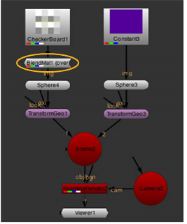
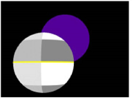
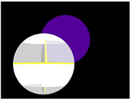
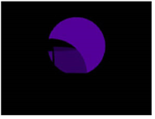
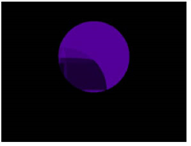
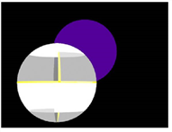
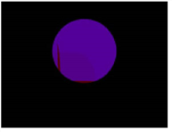

没有 BlendMat 节点。
使用 BlendMat 节点
应用于方格
球体 (有一个
方格阿尔法通道)
和 BlendMat
操作
设置为
钢网
.
的 着色器 菜单的 BlendMat 节点设置如何应用材质着色的像素与后面对象的像素相结合。它就像 MergeMat 节点，但是它不是与另一个材质混合，而是与 3D 场景中后面渲染的任何材质混合。
|
|
|
|
没有 BlendMat 节点。 |
使用 BlendMat 节点
|
| 1。 | 选择 3D > 着色器 > BlendMat 在要与背景像素合并的材质后添加 BlendMat 节点。 |
| 2. | 将 BlendMat 节点连接到 Img 要将材料投影到的 3D 对象的输入。 |

| 3. | 从 通道 下拉菜单中，选择要影响的频道。 |
| 4. | 从 操作 下拉菜单中，选择要如何组合 BlendMat 节点的输入材料和背景像素: |
• 要将材质设置为黑色，请选择 没有 .
• 要显示材料和背景重叠的材料，请选择 替换 .

• 要根据材质的 alpha 在背景像素上合成材质，请选择 结束 .

• 要显示材质的 alpha 为黑色的背景像素，请选择 钢网 。如果材质的 alpha 为白色，则材质设置为黑色。
要做到这一点，BlendMat 节点需要处理 alpha 通道，所以设置 通道 到 Rgba .
这个操作是相反的 面具 .

• 要显示材质 alpha 为白色的背景像素，请选择 面具 。当材质的 alpha 为黑色时，材质也设置为黑色。
For this to work, the BlendMat node needs to process the alpha channel, so set channels to rgba .
这个操作是相反的 钢网 .

• 要将背景像素添加到材质中，请选择 加 .
• 如果材质的像素值大于背景像素，或者使用背景像素，请选择 最大 .

• 如果材质的像素值小于背景像素，或者使用背景像素，请选择 Min .

|
|